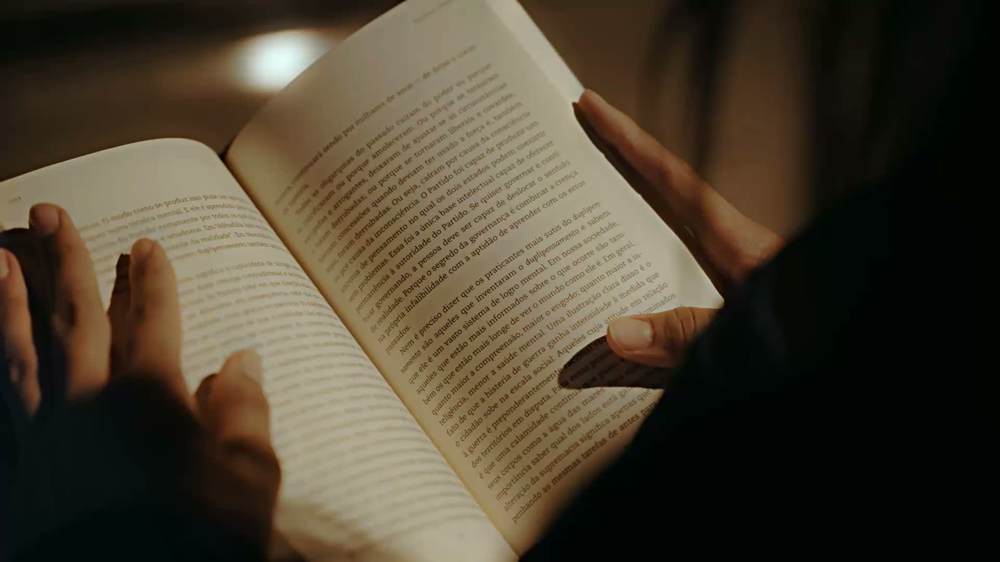
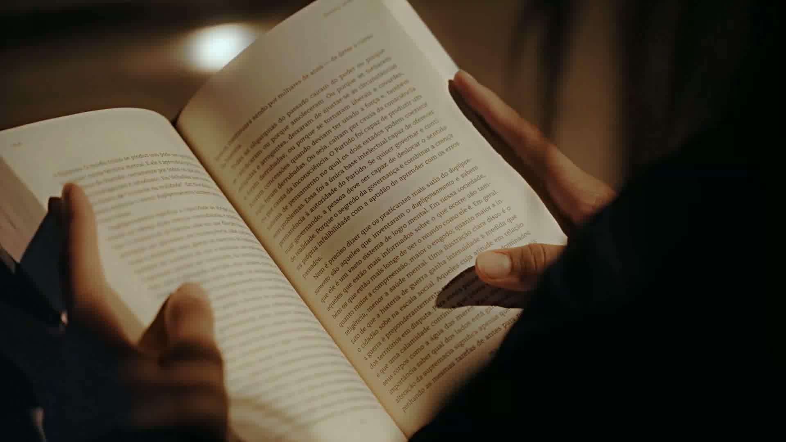
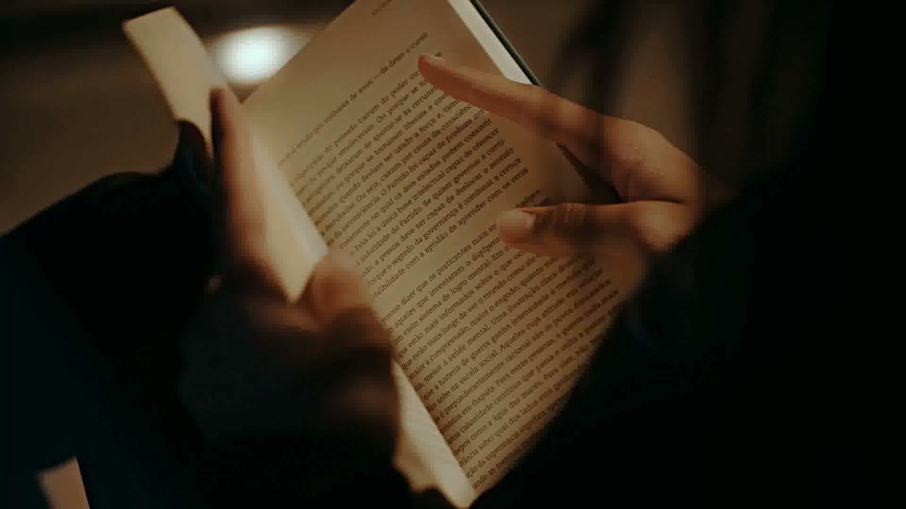
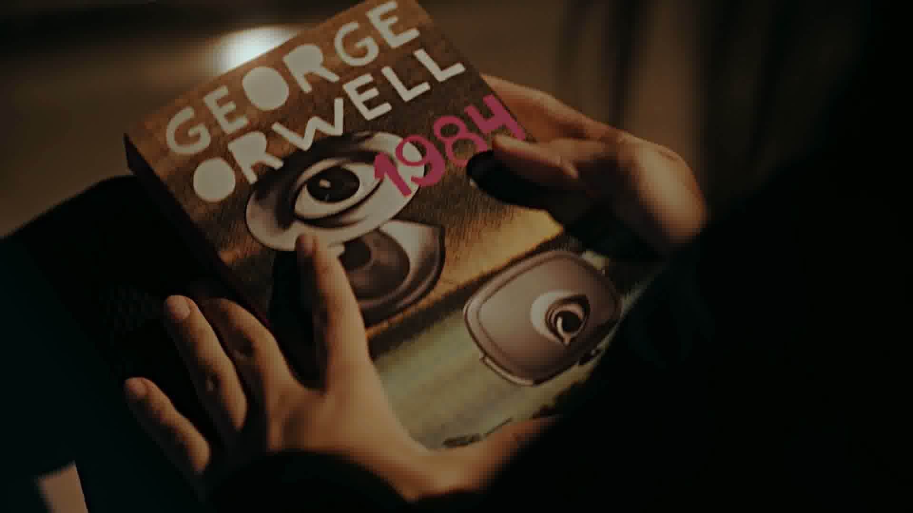
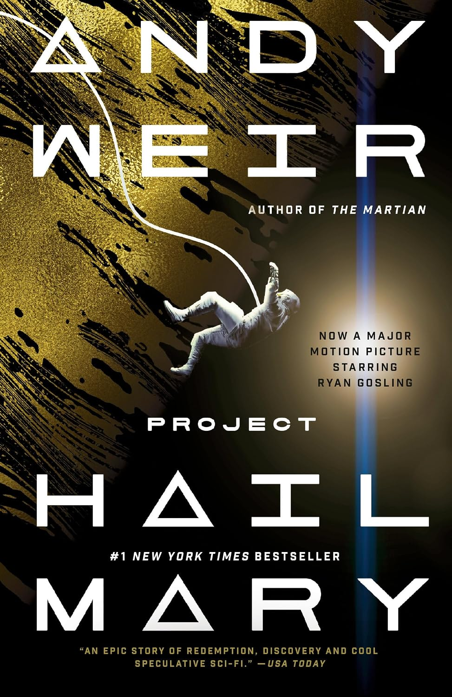
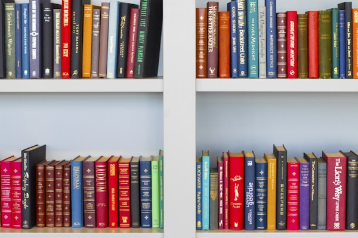

Conversations about the books that stay with you.
A podcast about the books that stay with you. Issue 12 revisits the novels with cracked spines, coffee stains, and notes in the margins — and asks why some stories never let go.

"Some books you read. Some books read you." — Ep. 12
On rereading, memory, and the books that feel different every time you open them.
The debut novels that stopped us in our tracks this year.
Why poetry sounds completely different when you hear it spoken.
A gentle argument for and against the literary canon.
New conversations about books, authors, and the quiet magic of reading — every two weeks.
"A reader lives a thousand lives. The non-reader lives only one."
— George R.R. Martin, discussed in Episode 09New episodes every two weeks — conversations about books, authors, and the quiet magic of reading. Find us wherever you listen.
Madi is a lifelong reader and the voice behind every episode — with a soft spot for literary fiction, debut novels, and anything that makes her cry on public transport.
Meet Madi →